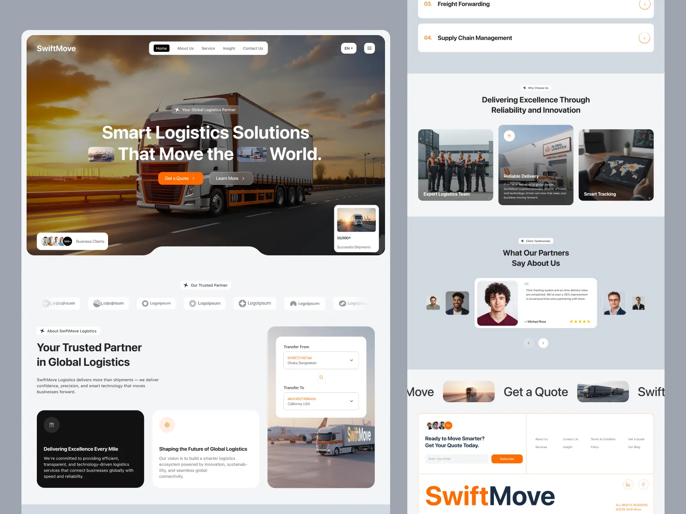

LEILÃO #0248
Vitória → Campos
Ao vivo
Movendo entregas, conectando oportunidades.
Confiança para mover cada rota.
Uma linguagem visual clara, humana e operacional para conectar Empresas, transportadores e entregas em um só fluxo.
VIX
CGR
08cores essenciais
04níveis de elevação
AAcontraste mínimo
8 pxgrade de espaçamento
01.
Fundamentos
Base para uma experiência consistente.
Branco traz clareza. Azul constrói confiança. Amarelo marca decisões. Laranja aparece somente quando a operação exige atenção imediata.
Rotas que movem oportunidades.
Informação clara em qualquer etapa
Manrope mantém detalhes de carga, prazo, preço e documentação legíveis em telas operacionais densas.
Aa Bb Cc 0123 R$
8 · 16 · 24 · 32 · 48 · 64
10 · 16 · 24 · 36
Borda · baixa · média
02.
Componentes
Peças prontas para a operação.
Os componentes priorizam leitura rápida e ações inequívocas, mantendo o aspecto editorial e sofisticado da referência.
Leilão aberto
Aprovado
Em análise
SLA em risco
Rascunho
03.
Aplicações
O sistema em situações reais.
Exemplos mostram como preço, reputação e urgência convivem sem competir pela atenção de quem decide.
Recebendo ofertas
#TR-0248
Origem
Vitória, ES
Coleta · Hoje, 08:30
522 km
Destino
Campos, RJ
Entrega · Até 18:00
CargaVidros + peças
Peso210 kg
VeículoFiorino / Van
Ofertas08 propostas
Direção visual
Da referência à identidade TransFluxo.
Mantivemos a composição limpa, os cartões arredondados, a tipografia expressiva e o contraste forte. A camada logística foi redesenhada para o contexto de leilões, confiança e acompanhamento de rotas.
